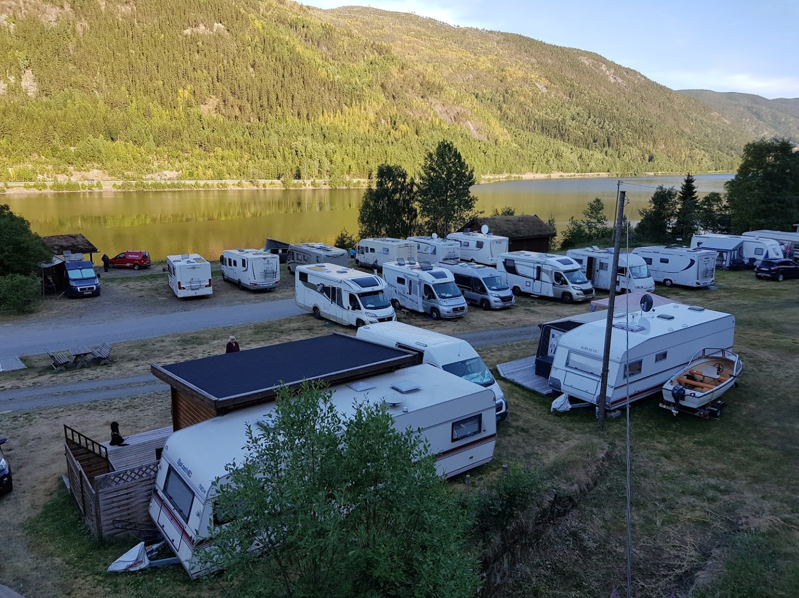

Fjordgløtt bedeutet „Fjordblick“ und liegt direkt am Norefjord, einem großen See zwischen Nore und Rødberg. Der Ort Rødberg gehört zu der Gemeinde „Nore og Uvdal, die sich in der Provinz Buskerud befindet. Der Campingplatz ist ca. 6 KM südlich von Rødberg gelegen, in ca. 1,6 KM Entfernung von der Autobahn E40 von Kongsberg in Richtung Geilo. Der Campingplatz grenzt an den Hardagervidda Naturpark, ein wunderschönes Naturgebiet was sich ausgezeichnet für wandern, langlaufen oder skifahren eignet. Dieses Gebiet ist Europas größtes Bergplateau. Mehr Auskünfte über dieses Gebiet finden Sie an einer anderen Stelle auf dieser Internetseite.
Der Campingplatz bietet 75 Plätze für Wohnwagen, Wohnmobilen und Zelten. Ausser den großzügigen Plätzen, wo Elektrizität selbstverständlich zu Verfügung steht, bieten wir auch unsere hochwertig ausgestatteten Hütten (Hytter) oder Chalets an. Im weiteren Verlauf dieser Internetseite erfahren Sie mehr darüber.
Unser sehr modernes und luxuriöses Sanitärgebäude ist versehen von Duschen, Toiletten, Sauna und Solarium. Auf dem Campingplatz finden Sie einen Campingladen und für Kinder eine großzügige Spielwiese mit Trampoline, Schaukel usw.
Sowie bereits erwähnt ist der Fjordgløtt Camping direct an dem Norefjord-See geliegen, wo Sie im Sommer baden und schwimmen können. Für Wassersportler vermieten wir Boote, Kanus und Wasserfahrräder und für Kinder stehen Schwimmwesten zu Verfügung. Der Norefjord-See bietet sowohl im Sommer als auch im Winter eine perfecte Möglichkeit zum Forelle-Angeln.
Click on the images below: